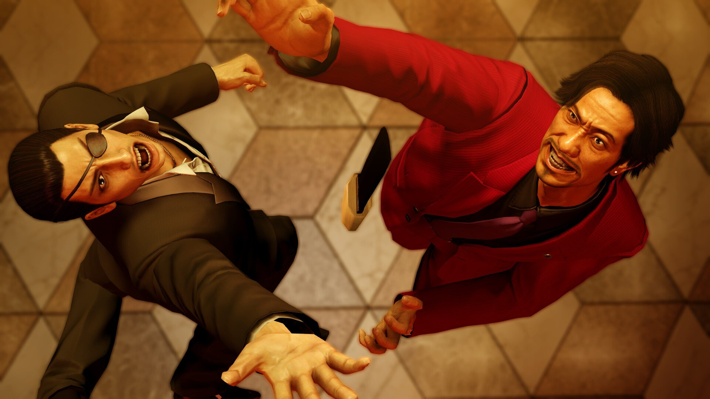
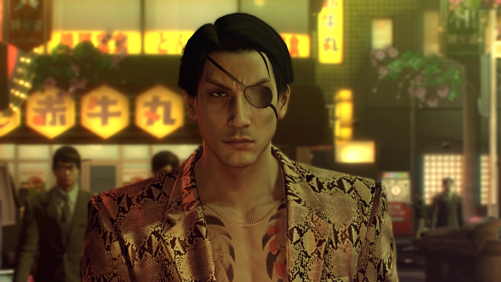
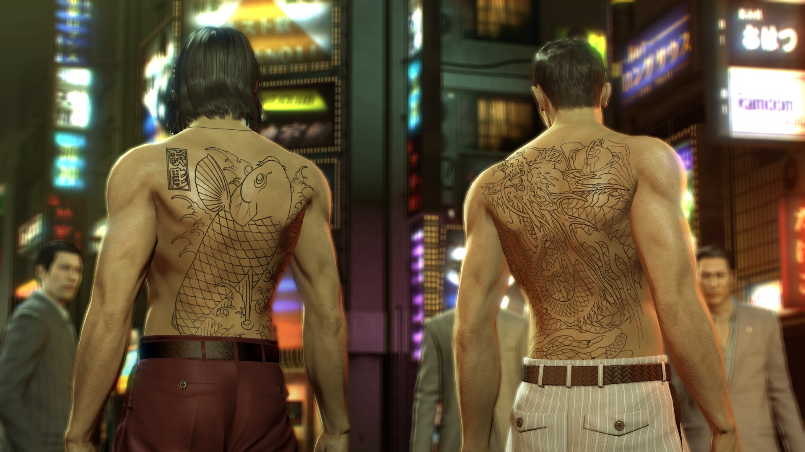
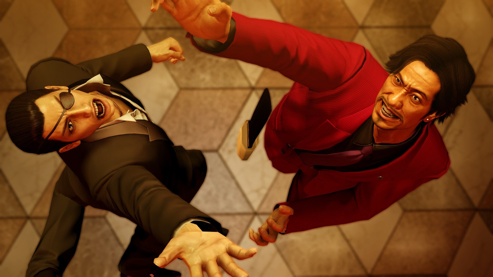
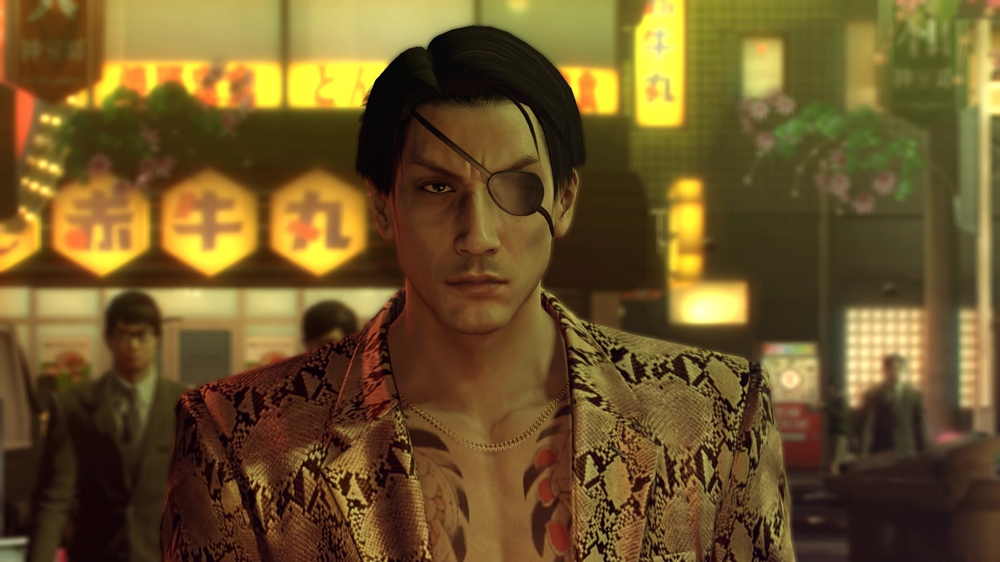
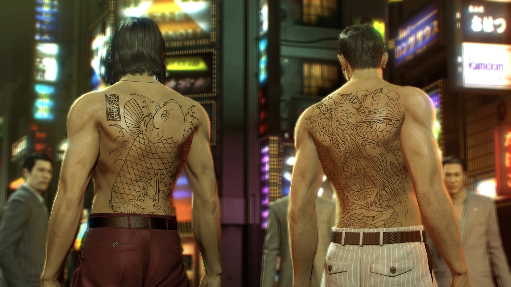

El brillo, el glamour y la decadencia desenfrenada de los años 80 están de vuelta en Yakuza 0.
Viaja a la ciudades de Tokio y Osaka, y lucha con todas tus fuerzas como el protagonista Kazuma Kiryu, y el personaje conocido como Goro Majima.
Juega como Kazuma Kiryu y descubre cómo se ve envuelto en un mundo de problemas cuando la simple cobranza de una deuda le sale mal, y su hombre termina asesinado.
Después, ponte en los zapatos de punta de plata de Goro Majima, y explora su vida “normal”, como dueño de un cabaret.
Precio: $100.000 COP
Disponibilidad: 29 claves restantes
Plataforma: Steam, Epic Games
Desarrollador: SEGA
Reseñas de Jugadores
⦾ Charles Xavier: Es el mejor juego tio
⦾ Peter Mazapan: Me ha cambiado la vida, que felicidad estar vivo

 




